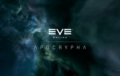
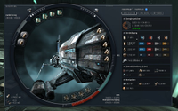

EVE
Archivierte Anleitung
Dieser Artikel wurde archiviert, da er - oder Teile daraus - nur noch unter einer älteren Ubuntu-Version nutzbar ist. Diese Anleitung wird vom Wiki-Team weder auf Richtigkeit überprüft noch anderweitig gepflegt. Zusätzlich wurde der Artikel für weitere Änderungen gesperrt.
Zum Verständnis dieses Artikels sind folgende Seiten hilfreich:
EVE-Online  ist ein sehr komplexes MMORPG (Massively Multiplayer Online Role-Playing Game). EVE-Online beinhaltet verschiedene Handlungsstränge, welche zum Teil vom Entwickler CCP vorgegeben ist, der Großteil des Spiels jedoch von den Spielern gestaltet wird. Es spielt in einer weit entfernten Zukunft im Weltraum, in der 4 verschiedene Rassen vier verschiedene technische Entwicklungen genommen haben, die alle in Bezug zueinander stehen. Alles dreht sich in diesem Spiel um Material und Ressourcen, Besitzansprüche an Sternensystemen, Diplomatie zwischen verschiedenen Spielerallianzen, Wirtschaft, Bergbau und vielem mehr. Diese Tatsachen führen dann, fast wie im realen Leben, zu diversen Auseinandersetzungen und Kriegen. Fast das gesamte Wirtschaftssystem, innerhalb des Spiels, wird ausschließlich durch die Spieler geprägt.
ist ein sehr komplexes MMORPG (Massively Multiplayer Online Role-Playing Game). EVE-Online beinhaltet verschiedene Handlungsstränge, welche zum Teil vom Entwickler CCP vorgegeben ist, der Großteil des Spiels jedoch von den Spielern gestaltet wird. Es spielt in einer weit entfernten Zukunft im Weltraum, in der 4 verschiedene Rassen vier verschiedene technische Entwicklungen genommen haben, die alle in Bezug zueinander stehen. Alles dreht sich in diesem Spiel um Material und Ressourcen, Besitzansprüche an Sternensystemen, Diplomatie zwischen verschiedenen Spielerallianzen, Wirtschaft, Bergbau und vielem mehr. Diese Tatsachen führen dann, fast wie im realen Leben, zu diversen Auseinandersetzungen und Kriegen. Fast das gesamte Wirtschaftssystem, innerhalb des Spiels, wird ausschließlich durch die Spieler geprägt.
Besonderheit dieses Spiels ist, dass durchschnittlich ca. 42.000 Spieler (bisheriges Maximum ca. 52.000) auf einem einzigen Servercluster spielen. Mehr als 6.000 Sonnensysteme, teilweise nur erreichbar durch Wurmlöcher welche man vorher suchen muss, können bereist werden. Eine weitere Besonderheit ist das erlernen der Fähigkeiten (Skills), die für die unterschiedlichen Raumfahrzeuge oder Produktionsstufen notwendig sind. Diese werden auch dann weiter gelernt wenn man nicht mit seinem Charakter online ist. Für jeden interessierten steht ein 14 Tage Probeabo zur Verfügung. Danach ist das Spiel selbst kostenpflichtig. 60 Tage ca. 38 USD. Alle Updates und Erweiterungen sind kostenlos auf der Webseite des Spieleentwicklers zu erhalten.

Installation¶
Linux Client¶
Der Support für Linux wurde eingestellt. Es ist kein *.deb Paket mehr verfügbar.
Windows Client mit wine¶
Unter eve-online.com  sollte der Download der etwa 1,6 GB großen Datei zu finden sein. Installation siehe Wine
sollte der Download der etwa 1,6 GB großen Datei zu finden sein. Installation siehe Wine
Fehlerquellen und Problembehebung¶
Die meisten Fehler sind nicht zu ermitteln wenn EVE nicht von der Konsole aus gestartet wird. So kann EVE zwar das Ladebild anzeigen, dann aber ohne ersichtlichen Grund beendet werden, ohne das eine Fehlermeldung erfolgt. Alle nachfolgenden Beispiele sind ausschließlich Starts des Spiels über die Konsole. Sollte es problemlos laufen, kann man sich auch einen Shortcut auf dem Desktop anlegen.
Probleme beim Start unter Ubuntu 9.10¶
Momentan gibt es unter Ubuntu 9.10 Probleme EVE zu starten, EVE kommt nicht über den Splashscreen hinaus. Die Gründe hierfür scheinen in einem Problem mit dem "intelligenten Hintergrundübertragungsdienst" "BITS" zu liegen. Es kann unter anderem helfen, für die Dauer des Starts das Netzwerk zu deaktivieren, was leicht über das Netzwerk-Applet möglich ist. Nach erfolgreichem Start (Login-Schirm wird angezeigt) kann man das Netzwerk wieder aktivieren. Sollte EVE im Vollbildschirmmodus laufen, dazu per ALT+TAB aus EVE herauswechseln. Weitere Infos hierzu unter http://bugs.winehq.org/show_bug.cgi?id=15737. Der Fehler tritt auch mit den neuesten WINE-Versionen auf.
_vivox.dll, vivoxsdk.dll nicht gefunden¶
Nach erfolgter Installation und dem erstmaligen Versuch EVE zu starten kann es passieren dass die vorhandenen _vivox.dll oder vivoxsdk.dll im Ordner EVE/bin nicht gefunden werden. Es genügt hier die dnsapi.dll aus einer eigenen Windows Installation in das Windows-Unterverzeichnis "system32" von WINE zu kopieren. Alternativ kann die DLL auch über diesen Download-Link erhalten werden: dnsapi.dll
Alternativ genügt es auch mit Hilfe der Wine-Konfiguration (winecfg) im Tab Bibliotheken den Eintrag dnsapi zu bearbeiten und von native auf Builtin zu ändern.
AGB's werden nicht angezeigt, man kann diese nicht annehmen¶
Das liegt an den fehlenden Schriftarten Arial oder Verdana. Abhilfe kann man mit dem Script winetricks erreichen.
wget http://www.kegel.com/wine/winetricks sh winetricks allfonts
Damit sind nun alle benötigten Schriftarten installiert. Ein Neustart von EVE kann begonnen werden, die AGB's sollten nun angezeigt werden.
EvE Updates werden nicht geladen und installiert¶
Wenn neue Clientversionen vom Spieleentwickler herausgegeben werden müssen diese auf dem PC installiert sein, damit man EVE weiter spielen kann. Hier wird es mit wine immer passieren, das man zwar die Meldung bekommt das ein Update vorliegt, dieses aber mit einer Fehlermeldung nicht vom Server geladen und damit abgebrochen wird. Das liegt am fehlenden Microsoft Visual C++ 2005 Redistributable Package. Auch hier hilft wieder winetricks. Nach der Installation sollte es nun auch mit den Updates funktionieren.
sh winetricks vcrun2005sp1
Computer entspricht nicht den Mindestanforderungen¶
EVE wird mit der Fehlermeldung beendet, dass der Computer nicht den Mindestvoraussetzungen entspricht. Shader Model 2 wird verlangt und ist hier das Minimum. Unter Anwendungen - Wine - Konfiguriere Wine ist in der Registrierkarte Grafik die Direct 3D Unterstützung auf Hardware einzustellen und der Pixel Shader zu aktivieren.
EVE wird ebenfalls nicht gestartet wenn in der selben Registrierkarte "Erlaube dem Fenstermanager die Fenster zu dekorieren" nicht markiert ist.
Soundprobleme¶
EVE hat einen eigenen "Teamspeakclienten" auf Basis von Vivox. Je nach eingerichtetem System kann man den Sound von /dev/dsp auf aoss oder ESD umleiten und von da aus mehrere Soundclients wie Teamspeak usw. gleichzeitig betreiben. Das sollte verhindern das die Soundkarte für andere Anwendungen blockiert wird.
Mit ALSA
aoss wine .wine/drive_c/Programme/CCP/EVE/eve.exe
oder mit ESD
esddsp wine .wine/drive_c/Programme/CCP/EVE/eve.exe
Hier gilt zu testen welche der beiden Lösungen die bessere ist. Denn aoss kann sich durchaus negativ auf die Leistung des Computers auswirken.
Weitere Informationen im Artikel alsa-oss
Feintuning¶
3D Umgebung¶
Wer meint Probleme mit der 3D Umgebung zu haben, der kann folgendes versuchen. An das Ende der .wine/user.reg den nachfolgenden Text eintragen
[Software\Wine\Direct3D] "DirectDrawRenderer"="opengl" "OffscreenRenderingMode"="fbo" "PixelShaderMode"="enabled" "VertexShaderMode"="hardware"
DirectX9¶
Einige schwören auf die DirectX9 Bibliotheken. Auch diese können mit Hilfe von winetricks installiert werden. Ob diese jedoch einen Erfolg bringen ist sicher von Installation zu Installation unterschiedlich. Nach der Installation ist auf jeden Fall die dnsapi.dll notwendig. Siehe hierzu Spiele/EVE.
sh winetricks directx9
Clienteinstellungen¶
Um eine einigermaßen vernünftige Framerate im Spiel zu erreichen und diverse Fehlermeldungen zu beheben, müssen die Grafikeinstellungen des Clients auf ein Minimum reduziert werden. Schattendarstellung und HDR deaktivieren. Shader- und Textur-Qualität sowie Lod Quality auf niedrig.
Fazit¶
Getestet wurde alles mit einer Bildschirmauflösung von 1440 x 900 px auf einer 1,5 Ghz Intel Dual CPU, 2GB Ram und Nvidia GForce 8600m GS. All diese Einstellungen haben letztlich die Framerate von 42 auf ca. 52 nach oben korrigiert. Bei entsprechend leistungsfähigeren Computern dürfte der Wert sicher noch besser sein.
Mehrere Clients gleichzeitig betreiben¶
Wer mehr als einen Account gleichzeitig spielen möchte, muss EVE etwas anders starten als gewöhnlich. Das Spiel selbst hat die Eigenschaft immer im Vollbildmodus zu arbeiten. Daher folgende Alternative:

wine explorer /desktop=EVE,800x600 "C:\Programme\CCP\EVE\eve.exe"
wine explorer /desktop=EVE,800x600 "C:\Program Files\CCP\EVE\eve.exe"
Zu beachten ist hier dass für jedes eigene Fenster die Bezeichnung /desktop=EVE durch /desktop=EVE2 oder /desktop=EVE3 usw. erweitert wird. 800x600 ist in dem Fall die Größe des geöffneten Fensters.
Eigenen X-Server für das Spiel¶
Auf der Konsole Strg + Alt + F1 kann man mit Hilfe folgender Zeile einen eigenen X-Server starten, in dem dann nur eine Shell zur Verfügung steht. Mit dieser können dann alle benötigten weiteren Programme, zum Beispiel Teamspeak, gestartet. Alternativ kann man sich hier auch eine eigene Umgebung zum spielen aufbauen, in der dann alle relevanten Links auf einen entsprechend vorbereiteten Desktop abgelegt werden.
xinit /usr/bin/xterm -- :1
Siehe auch Eigener XServer für Spiele
- Erstellt mit Inyoka
-
 2004 – 2017 ubuntuusers.de • Einige Rechte vorbehalten
2004 – 2017 ubuntuusers.de • Einige Rechte vorbehalten
Lizenz • Kontakt • Datenschutz • Impressum • Serverstatus -
Serverhousing gespendet von